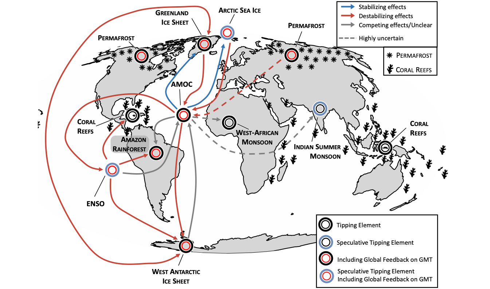

Research Highlights
1. Substantial difference in global permafrost estimates from permafrost definitions

Global permafrost regions are undergoing significant changes due to global warming, whose assessments often rely on permafrost extent estimates derived from climate model simulations. These assessments employ a range of definitions for the presence of permafrost, leading to inconsistencies in the calculation of permafrost area. Here, we present permafrost area calculations using 10 different definitions for detecting permafrost presence based on either ground thermodynamics, soil hydrology, or air-ground coupling from an ensemble of 32 Earth system models. We find that variations between permafrost-presence definitions result in substantial differences of up to 18 million km2, where any given model could both over- or underestimate the present-day permafrost area. Ground-thermodynamic-based definitions are, on average, comparable with observations but are subject to a large inter-model spread. The associated uncertainty of permafrost area estimates is reduced in definitions based on ground-air coupling. However, their representation of permafrost area strongly depends on how each model represents the ground-air coupling processes. The definition-based spread in permafrost area can affect estimates of permafrost-related impacts and feedbacks, such as quantifying permafrost carbon changes. For instance, the definition spread in permafrost area estimates can lead to differences in simulated permafrost-area soil carbon changes of up to 28%. We therefore emphasize the importance of consistent and well-justified permafrost-presence definitions for robust projections and accurate assessments of permafrost from climate model outputs.
2. Overshooting 1.5°C is fast becoming inevitable

The IPCC AR6 found that global warming is likely or very likely to exceed 1.5°C relative to the pre-Industrial era in the near term (before 2040) under all but the very low greenhouse gas emissions scenarios (SSP1-1.9). Few pathways remain that avoid a 1.5°C overshoot. Research since AR6 indicates overshooting 1.5°C is all but inevitable in the near term. The world’s ability to bring temperature down after exceeding 1.5°C warming depends on removing more CO2 from the atmosphere than is emitted, or net-negative CO2 emissions. There are significant unresolved questions regarding the feasibility, risks and effectiveness of CDR at scale, so achieving net-negative emissions is far from a given. If achieved, there will still be a delay of several years before the climate cools, due to lags in the carbon cycle and thermal response. Moreover, there is a risk that during overshoot the release of GHGs from natural carbon sinks could be triggered in ways not yet clearly anticipated. This could prolong the overshoot and increase the risk of irreversible impacts, and their potential magnitude. Widespread and potentially irreversible impacts worsen with higher magnitude and longer duration of overshoot. Exposure to extreme events, such as heatwaves, will exacerbate biodiversity loss and economic damage, particularly in tropical countries. Irreversible impacts are especially likely for marine biodiversity, with species facing the added pressure of prolonged ocean acidification after overshoot. Other irreversible changes (timescales of centuries or more) include permafrost carbon loss, sea-level rise from ocean thermal expansion, melting of ice sheets, and changes in ocean acidity, oxygenation and temperature. Furthermore, a long period above 2°C of warming carries a considerable risk of triggering self-perpetuating feedbacks leading to instabilities of the Greenland or West Antarctic ice sheets or mountain glaciers, largely irreversible even on timescales of centuries to millennia. The impacts could include several metres of sea-level rise in the long term, causing loss of land, livelihoods and cultural heritage in coastal communities and small island states, and irreversible degradation of mid-latitude coral reef species.
Future Earth, The Earth League, WCRP: 10 New Insights in Climate Science 2023/2024. Stockholm, 2023.
3. Reviewing the current knowledge on climate tipping point interactions and cascades
Climate tipping elements are large-scale subsystems of the Earth that may transgress critical thresholds (tipping points) under ongoing global warming, with substantial impacts on biosphere and human societies. Frequently studied examples of such tipping elements include the Greenland Ice Sheet, the Atlantic Meridional Overturning Circulation, permafrost, monsoon systems, and the Amazon rainforest. While recent scientific efforts have improved our knowledge about individual tipping elements, the interactions between them are less well understood. Also, the potential of individual tipping events to induce additional tipping elsewhere, or stabilize other tipping elements is largely unknown. Here, we map out the current state of the literature on the interactions between climate tipping elements and review the influences between them. To do so, we gathered evidence from model simulations, observations and conceptual understanding, as well as archetypal examples of paleoclimate reconstructions where multi-component or spatially propagating transitions were potentially at play. Lastly, we identify crucial knowledge gaps in tipping element interactions and outline how future research could address those gaps.
4. Future permafrost hydrology could have impacts beyond Arctic boundaries

The current generation of Earth system models exhibits large inter-model differences in the simulated climate of the Arctic and subarctic zone, with differences in model structure and parametrizations being one of the main sources of uncertainty. One particularly challenging aspect in modelling is the representation of terrestrial processes in permafrost-affected regions, which are often governed by spatial heterogeneity far below the resolution of the models' land surface components. Here, we use the Max Planck Institute (MPI) Earth System Model to investigate how different plausible assumptions for the representation of permafrost hydrology modulate land–atmosphere interactions and how the resulting feedbacks affect not only the regional and global climate, but also our ability to predict whether the high latitudes will become wetter or drier in a warmer future. Focusing on two idealized setups that induce comparatively “wet” or “dry” conditions in regions that are presently affected by permafrost, we find that the parameter settings determine the direction of the 21st-century trend in the simulated soil water content and result in substantial differences in the land–atmosphere exchange of energy and moisture. The latter leads to differences in the simulated cloud cover during spring and summer and thus in the planetary energy uptake. The respective effects are so pronounced that uncertainties in the representation of the Arctic hydrological cycle can help to explain a large fraction of the inter-model spread in regional surface temperatures and precipitation. Furthermore, they affect a range of components of the Earth system as far to the south as the tropics. With both setups being similarly plausible, our findings highlight the need for more observational constraints on the permafrost hydrology to reduce the inter-model spread in Arctic climate projections.
5. Climate-driven impacts and human vulnerability increase the emergence of vulnerable regions

Many regions Many regions of the Earth show accelerated climate-related changes. In regions most vulnerable to climate change, physical, ecological and socioeconomic systems are losing resilience against further change. Consequently, large numbers of people and their livelihoods are affected due to the close interconnection of human and natural vulnerabilities. Socioeconomically vulnerable regions emerge on a global scale. Regional hotspots cluster in Central America, Asia, the Middle East and several regions of Africa: the Sahel, Central and East Africa, where socio-economic factors significantly contribute to human vulnerability. Each hotspot has its unique economic, ecological and political conditions. Gender inequality exacerbates vulnerability to large climate-driven impacts. An estimated 1.6 billion people live in regions of the highest category of vulnerability, whose populations are also predicted to double by 2050. Changes in climate dynamics due to global warming could lead to significant disturbances in regions characterized by human vulnerability. Furthermore, anthropogenic interference puts many ecosystems at high risk of structural and dynamic change, decreasing ecosystem services and resource availability for communities as well as reducing their climate mitigation capability. Vulnerability hotspots are also related to the loss of habitats and biodiversity decline. The close connection between socioeconomic drivers of vulnerability and human livelihoods is determined by access to resources and basic needs, such as food and water supplies.
Future Earth, The Earth League, WCRP: 10 New Insights in Climate Science 2022. Stockholm, 2022.
6. Earth system reversibility under temperature overshoots
Anthropogenic CO2 emissions cause irreversible climate change on centennial to millennial timescales, yet current mitigation efforts are insufficient to limit global warming to a level that is considered safe. Carbon dioxide removal (CDR) has been suggested as an option to partially reverse climate change and to return the Earth system to a less dangerous state after a period of temperature overshoot. Whether or to what extent such partial reversal of climate change under CDR would happen is, next to socio-economic feasibility and sustainability, key to assessing CDR as a mitigation option. Here, we use a state-of-the-art Earth system model that includes a representation of permafrost carbon to investigate the reversibility of the Earth system after overshoots of different durations and magnitudes in idealized simulations. We find that atmospheric CO2 concentrations are slightly lower after an overshoot, compared to a reference simulation without overshoot, due to a near-perfect compensation of carbon losses from land by increased ocean carbon uptake during the overshoot periods. The legacy of an overshoot is, on a centennial timescale, indiscernible (within natural variability) from a reference case without overshoot for many aspects of the Earth system including global average surface temperature, marine and terrestrial productivity, strength of the Atlantic meridional overturning circulation, surface ocean pH, surface O2 concentration, and permafrost extent, except in the most extreme overshoot scenario considered in this study. Consistent with previous studies, we find irreversibility in permafrost carbon and deep ocean properties like seawater temperature, pH, and O2 concentrations. We do not find any indication of tipping points or self-reinforcing feedbacks that would put the Earth system on a significantly different trajectory after an overshoot. Hence, the effectiveness of CDR in partially reversing large-scale patterns of climate change might not be the main issue of CDR but rather the impacts and risks that would occur during the period of elevated temperatures during the overshoot.
Research collaborations
- Max Planck Institute for Meteorology, Hamburg, Germany
- Helmoltz Zentrum Hereon, Geesthacht, Germany
- Complutense University of Madrid, Madrid, Spain
- Center for Energy, Environmental and Technological Research, Madrid, Spain
- University of Alaska Fairbanks, Fairbanks, Alaska, USA
- Utrecht University, Utrecht, Netherlands
- Met Office, Exter, UK
- University of Exeter, Exeter, UK
- Lund University, Lund, Sweden
- Potsdam Institute for Climate Impact Research, Potsdam, Germany
- NORCE Norwegian Research Centre, Bjerknes Centre for Climate Research, Bergen, Norway
- Norwegian University of Science and Technology, Trondheim, Norway
- Universidade Federal de Santa Catarina, Florianopolis, Brazil
- Bharti Institute of Public Policy, Indian School of Business, Hyderabad, India
- Nansen Scientific Society, Bergen, Norway
- Helmholtz Centre for Environmental Research, Leipzig, Germany